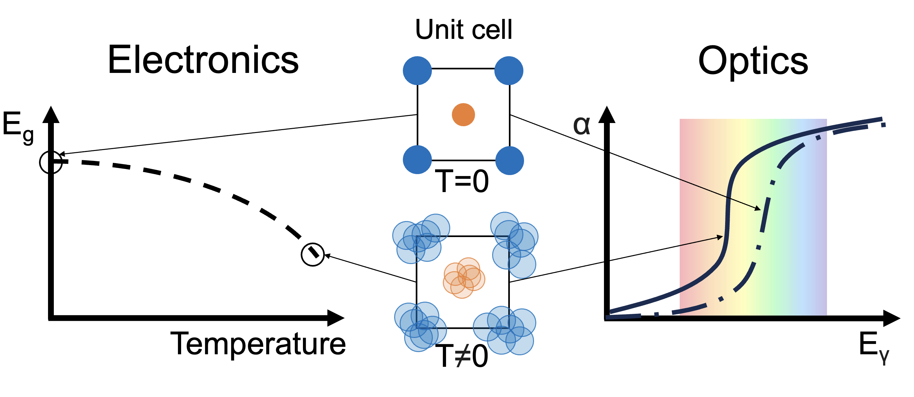

Research
PhD research
Materials Modelling for Energy and Optoelectronic Applications
To characterize the structural and optoelectronic properties of materials, we employ first-principles computational methods such as Density Functional Theory (DFT) and ab initio Molecular Dynamics. These techniques enable the accurate prediction of fundamental properties in solid-state crystal systems, often in close agreement with experimental results.
Our research focuses on exploring novel families of semiconductor materials, including chalcohalide antiperovskites, which show great promise for energy and optoelectronic applications, such as in photovoltaics.
Understanding and developing these materials may ultimately contribute to technologies that support the transition toward a more sustainable and decarbonized future.
Electron-Phonon Coupling Effects in Anharmonic Semiconductor Optoelectronics
While Density Functional Theory (DFT) is formulated at zero temperature, it is generally sufficient for accurately predicting the optoelectronic properties of many condensed matter systems. However, in materials with strong electron-phonon interactions, thermal lattice effects must be taken into account to achieve reliable results.
This challenge becomes even more pronounced in anharmonic materials, where the standard harmonic approximation of phonons breaks down, necessitating the use of more advanced and computationally intensive methodologies.
To address this, we use a combined DFT and ab initio molecular dynamics (DFT-MD) approach to compute electron-phonon corrections to the optoelectronic properties of semiconductors. Using this method, we have predicted a significant band gap reduction in chalcohalide antiperovskites, as well as notable band gap changes in other perovskite-like systems.

High-Throughput Screening of Materials
The emergence of large-scale materials databases, containing hundreds of thousands of compounds and their computed properties, has enabled high-throughput screening approaches for a wide range of applications.
We leverage databases such as The Materials Project and PhononDB to identify materials with specific targeted properties. For example, we conduct screenings to discover compounds exhibiting strong anharmonicity, significant electron-phonon coupling, and pronounced band gap variations with temperature.
Graph Convolutional Networks for Materials Property Prediction
Graph Convolutional Networks (GCNs) have recently emerged as powerful machine learning tools for predicting materials properties. These models operate on graphs, a mathematical structure used to represent data systems with relational connections, such as social networks, molecular structures, or crystalline materials. In this framework, graphs consist of nodes (representing atoms) and edges (representing interatomic distances or chemical bonds), each enriched with descriptive features.
By allowing multiple edges between pairs of nodes, GCNs can effectively capture the periodic nature of crystal structures. This makes them particularly well-suited for modelling the complexities of solid-state materials.
In our work, we develop GCN-based models to predict electronic band gaps and their thermal evolution, providing an efficient alternative to computationally expensive DFT calculations. This approach also opens the door to studying more complex systems, such as solid solutions, that are often challenging for traditional methods.
Crystal Structure Prediction with Machine Learning Interatomic Potentials (MLIPs)
The structure of the unit cell and the types of ions it contains fundamentally determine the physical and chemical properties of a crystalline material. Therefore, accurately predicting the crystal phases of materials is essential for understanding and designing new compounds.
Crystal Structure Prediction (CSP) methods aim to identify stable and metastable phases of a material using first-principles calculations. However, these methods are typically computationally intensive due to their reliance on Density Functional Theory (DFT) and the need to explore a high-dimensional, complex energy (or Gibbs free energy) landscape.
To overcome these challenges, we employ Machine Learning Interatomic Potentials (MLIPs) in combination with random search algorithms to efficiently explore the energy landscape of materials. MLIP models (such as MACE and M3GNet) offer a high degree of accuracy compared to DFT while significantly reducing computational cost. This enables the exploration of polymorphism in a wide range of systems, from simple inorganic compounds to complex molecular crystals.
The github repository to PyMCSP (our code) can be found
here.